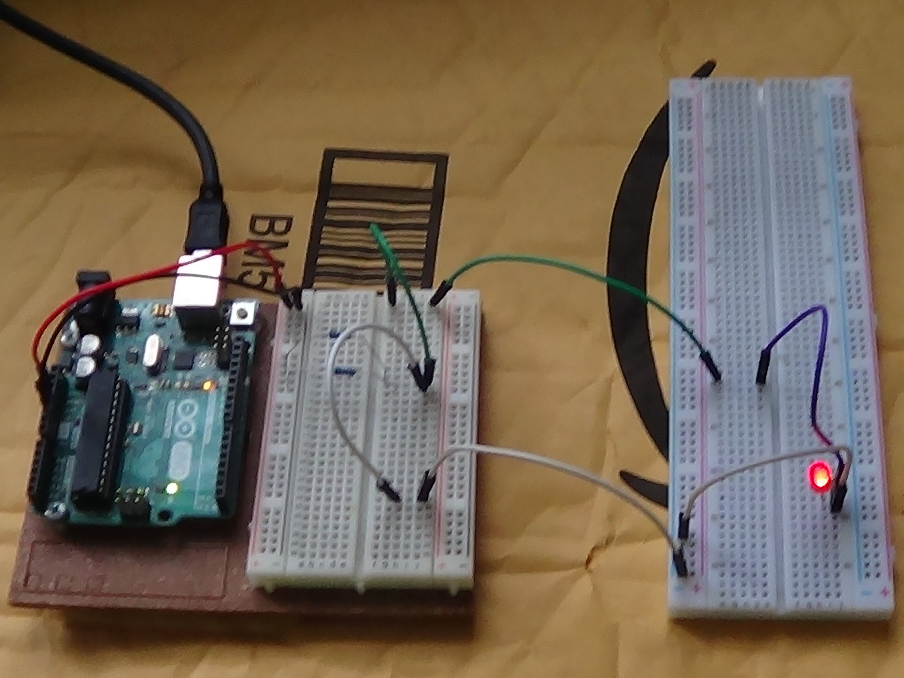
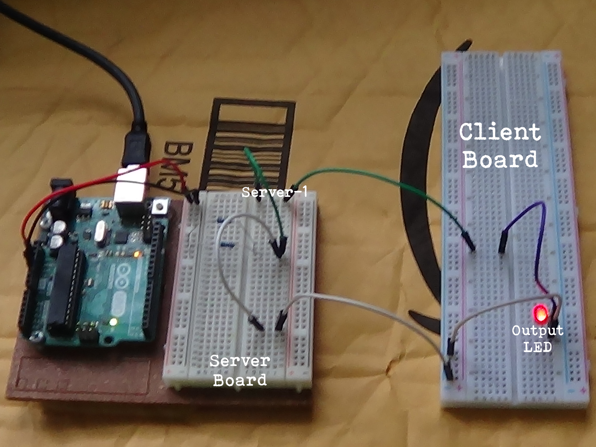

About UNO
Uno stands for "Unified Networking Online". I plan to change the name eventually! The premise of it is that there is multiple 'client' boards that are wired to a 'server' board. The manager (being person) of the server can change the output from ON to OFF. I'm not good at explaining so here's some portable network graphics of the ALPHA version.   Copyright 2020 Honest Productions